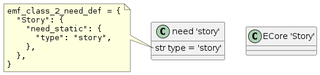

Configuration¶
All configurations take place in your project’s conf.py file.
Activation¶
Add sphinx_emf to your extensions:
extensions = ["sphinx_needs", "sphinx_emf", ]
Options¶
All configuration options start with the prefix emf_ for Sphinx-EMF.
Sphinx-EMF features some nested configuration parameters and therefore uses pydantic to validate the configuration. There are 3 pydantic classes defined:
SphinxEmfCommonConfigparameters common to CLI and the Sphinx BuilderSphinxEmfCliConfigCLI specific parametersSphinxEmfBuilderConfigSphinx Builder specific parameters
The CLI script transforms from XMI to RST (needs) while the Sphinx Builder reads RST and writes XMI.
Note
Above classes are not exposed to the user, they are just needed internally for pydantic.
The class field names starting with emf_ are the relevant configuration parameters
with their documented types. You may put all configuration (common, CLI and builder) into your conf.py
and use that file also as input parameter to the CLI script.
Note
The type checking also uses TypedDict types which allows the validation of nested dictionaries.
Those are added to the documentation as well (e.g. sphinx_emf.config.model.Class2NeedDefValues).
The class field names represent the values of the dictionary.
- pydantic model SphinxEmfCommonConfig¶
Common configuration for both CLI (XMI -> RST) and builder (RST -> XMI).
- field emf_path_ecore : StrictStr [Required]¶
Path to the ECore metamodel.
-
field emf_pre_xmi_read_hook : Callable[[ResourceSet], ResourceSet] | None =
None¶ Function that shall be called before reading the XMI model.
Input parameter is the ECore metamodel
ResourceSet. Must return the ECore metamodelResourceSetagain after modifying it.This can be used to add custom model parts that are not part of the ECore metamodel.
-
field emf_post_xmi_read_hook : Callable[[XMIResource], list[Any]] | None =
None¶ Function that shall be called after reading the XMI model.
Input paramter is the XMI model
XMIResource. Must return a list of XMI model roots.The main use case is the removal of unused XMI model roots.
-
field emf_class_2_need_def : dict[StrictStr, Class2NeedDefValues] =
{}¶ Main configuration mapping from EMF ECore classes to need types.
Keys are ECore class names, values are instances of
Class2NeedDefValues. Example:emf_class_2_need_def = { "Story": { "need_static": { "type": "story", }, "emf_to_need_options": [ ("Name", "title"), ("_iternal_id", "id", gen_needs_id), ], }, }For more explanation see
Class2NeedDefValues.
- class Class2NeedDefValues¶
Definition for
SphinxEmfCommonConfig.emf_class_2_need_def.- need_static : dict[StrictStr, StrictStr]¶
Static needs options given as key-value pairs.
This is commonly used to set the need
type. Example:{ 'need_static': { 'type': 'story' } }
- emf_to_need_options : list[tuple[StrictStr, StrictStr] | tuple[StrictStr, StrictStr, Callable[[StrictStr, EObject, dict[StrictStr, Any]], StrictStr]]]¶
Define how ECore field names are copied to need extra options and links.
Any simple ECore type (bool, int, str, enum) leads to a needs extra option. ECore list types (
EOrderedSet) produce a needs extra link.Any ECore field that does not appear here and also not in
emf_to_need_contentwill be ignored.Tuple entries:
ECore field name
need extra option/link name
transformer function [optional]
The ECore field name tuple[0] will be transformed to the need extra option or need extra link given in tuple[1].
Any ECore values that lead to need extra options will be converted to string types.
Any Ecore list values lead to need extra links, even when the ECore definition is a containment (nested object). When converting back from RST to XMI, the ECore containment information from the ECore metamodel is used to transform a needs link correctly back to an ECore containment. This makes it possible to change the link modeling for Sphinx-Needs. Users may want to write certain need types to dedicated files which makes it impossible to model them as UML composition (containment) - which in the Sphinx-Needs world - is realized as nested needs.
The transformer function is only allowed for simple types that lead to need extra options. The function must support the following parameters:
valueECore field value of tuple[0] field nameecore_itemfull ECore object; can be used to access other ECore fieldscontextempty dicionary, will be the same instance for all invocations of transformers; and can be used to hold context information across invocations
The function must return a
strtype.A use case for transformers is to generate unique need IDs from ECore fields. Example:
def gen_needs_id(value: str, ecore_item: Any, context: Dict[str, Any]) -> str: need_prefixes = { 'Story': 'STORY_', 'Requirement': 'REQ_', } prefix = need_prefixes[ecore_item.__class__.__name__] need_id = prefix + value.upper() return need_id emf_class_2_need_def = { "Story": { "need_static": { "type": "story", }, "emf_to_need_options": [ ("Name", "title"), # need title: direct copy the 'Name' field ("_iternal_id", "id", gen_needs_id), # need id: use a transformer ], }, }Note
pyecore stores the XMI unique identifiers in the field
_internal_idwhich can also be used.![@startuml
class "need 'story'" as need {
str type = 'story'
str id = 'STORY_abc'
str title = 'The alphabet story'
}
class "ECore 'Story'" as ecore {
str _internal_id = 'abc'
str Name = 'The alphabet story'
}
circle "gen_needs_id()" as gen_needs_id
ecore::_internal_id --> gen_needs_id
gen_needs_id --> need::id
ecore::Name --> need::title
note as n1
<code>
emf_class_2_need_def = {
"Story": {
"need_static": {
"type": "story",
},
"emf_to_need_options": [
("Name", "title"),
("_iternal_id", "id", gen_needs_id),
],
},
}
end note
@enduml
.. note::
The mandatory need fields ``id``, ``type`` and ``title`` must appear in one the configuration
sections :attr:`need_static` or :attr:`emf_to_need_options`.](_images/plantuml-54148630778f150f40ad1995920c0349956fb377.png)
- emf_to_need_content : list[tuple[StrictStr, StrictStr] | tuple[StrictStr, StrictStr, Callable[[StrictStr, EObject, dict[StrictStr, Any]], StrictStr]]]¶
Define how ECore field names are copied to the need content area.
Tuple entries:
ECore field name
need content title
transformer function [optional]
Any simple ECore type (bool, int, str, enum) leads to a highlighted section in the need body with the tuple[1] prepended as bold text. Any ECore list type (
EOrderedSet) produces a list of nested needs, so new need directives are added to the current need’s body. See also the description ofemf_to_need_optionsabout modeling of ECore list fields as linked needs or nested needs.Example:
from sphinx_emf.user_hooks.escape_rst import to_rst def escape_rst(value: str, ecore_item: Any, context: Dict[str, Any]) -> str: del ecore_item del context escaped_value = to_rst(value) return escaped_value emf_class_2_need_def = { "Story": { "need_static": { "type": "story", }, "emf_to_need_options": [ ("Name", "title"), ("_iternal_id", "id", gen_needs_id), ], "emf_to_need_content": [ ("Description", "Description"), ("LongDescription", "Long Description", escape_rst), ("Requirements", "Requirements"), ], }, }.. story:: The alphabet story :id: STORY_abc **Description** Names all letters. **Long Description** Special care for: - the sort order and - not to forget a letter **Requirements** .. requirement:: Must be sorted :id: REQ_sorted .. requirement:: Must not forget a letter :id: REQ_forgetThe transformer has the same parameters and return type as in
emf_to_need_options. It can only be used for simple ECore types (bool, int, str, enum).Note
In above example an ECore class called
Requirementis missing inemf_class_2_need_def. It is needed to tell Sphinx-EMF how to represent the nestedrequirementneed types. It is skipped to keep the example short.Note
XMI does not specify any highlighting language such as Markdown, RestructuredText or HTML for plain text (multiline) fields. Therefore text fields cannot be copied 1:1 to RST as strings like
the *.json filesare not valid RST. The*needs to be escaped. Sphinx-EMF provides a function to transform plain text to RST. See above example how to import and use it. The function handles the following scenarios:all incomplete inline literals are escaped
lists are correctly formatted
paragraphs are correctly formatted, line breaks lead to lines prepended with ‘| ‘
You may also decide to store RST directly to XMI. This however needs custom escaping of
"as it is the start/stop sequence of values.Any ECore field that does not appear here and also not in
emf_to_need_optionswill be ignored.
- settings : Class2NeedDefSettings¶
- class Class2NeedDefSettings¶
Definition for
Class2NeedDefValues.settings.- remove_if_unlinked : StrictBool¶
Remove the EMF type if it is not linked by other EMF types.
The idea of this parameter is to prevent importing ECore objects that are not needed (linked) by the main objects of interest. All ECore instances can be a link target in one way or another:
they are a nested containment of another ECore instance
they are linked by another ECore instance
If this setting is
True, root ECore instances are ignored during import. The parameterremove_ignored_link_sourcescan be used to further specify the behavior.
- remove_ignored_link_sources : list[StrictStr]¶
List of EMF types whose outgoing links are ignored when removing elements.
The setting is only relevant if
remove_if_unlinkedis True.The setting can be used to also ignore (remove) elements that are contained in the listed types as nested elements or that are linked by the listed elements types. The elements will only be removed if they are not linked by other element types not listed here.
The main use case of the feature is to ignore containment links when removing ECore objects. Almost all ECore objects are contained by another ECore object.
- pydantic model SphinxEmfCliConfig¶
Sphinx-EMF config model for the CLI that converts from XMI to RST.
- field emf_path_xmi : StrictStr [Required]¶
Path to the ECore XMI model.
- field emf_rst_output_configs : list[dict['path' | 'emf_types' | 'default', StrictStr | list[StrictStr] | StrictBool]] [Required]¶
Mapping of ECore types to output files.
This is needed to distribute ECore types from one XMI to multiple RST files.
Note
Any ECore type that goes to another file than its parent must be part of
Class2NeedDefValues.emf_to_need_optionsof its original ECore parent. It cannot be be a nested need as it is located in a different file.It is a list of dictionaries with the following keys:
path(str) RST output file pathemf_types(List[str]) list of ECore types for the file; must exist ifdefaultis not given orFalse[optional]default(bool) ifTruethe file will be the target for all remaining ECore classes [optional]
Note
"default": Truecan only be set for one dictionary in the listNote
emf_typesmust be unique across all list entriesNote
The list order is important as it defines which elements are moved first - with all its nested needs.
-
field emf_rst_indent : ConstrainedIntValue =
3¶ Amount of leading spaces for each RST code indentation level.
- Constraints:¶
exclusiveMinimum = 0
-
field emf_rst_write_default_values : StrictBool =
False¶ Serialize XMI default values to RST need objects.
If
False, need extra options and need content fields will not get created if the ECore field is not explicitly set in XMI.If
True, need extra options and need content fields get created with the default value even when the field is not explicitely set in XMI. ForEBooleantypes, if not given in the ECore metamodel asdefaultValueLiteral, the default value isFalse.- Constraints:¶
type = boolean
-
field emf_allowed_classes : list[StrictStr] =
[]¶ List of EMF class names that should be allowed for importing.
The filter fields
are evaluated with the following logic for each object instance in order:
discard the object if
emf_allowed_classesis not empty andthe object class does not appear in
emf_allowed_classes
discard the object if
the object class appears in
emf_denied_classes
discard the object if
the class name appears in
emf_allowed_valuesandthe values of the object fields don’t appear in
emf_allowed_values
discard the object if
the class name appears in
emf_denied_valuesandthe values of the object fields appear in
emf_denied_values
if the logic reaches this point and the object is not discarded, it will be imported
-
field emf_denied_classes : list[StrictStr] =
[]¶ List of EMF class names that should be denied for importing.
For the filter evaluation logic see
emf_allowed_classes.
-
field emf_allowed_values : dict[StrictStr, dict[StrictStr, list[StrictStr]]] =
{}¶ Map EMF class names to EMF field names to allowed values of the fields.
For the filter evaluation logic see
emf_allowed_classes.
-
field emf_denied_values : dict[StrictStr, dict[StrictStr, list[StrictStr]]] =
{}¶ Map EMF class names to EMF field names to denied values of the fields.
For the filter evaluation logic see
emf_allowed_classes.
-
field emf_sort_field : StrictStr =
None¶ Sort ECore instances by this field to get reproducible RST output.
This affects containment links as well as non-containment links.
Set to
Noneto disable sorting.
-
field emf_templates_dir : StrictStr =
None¶ Path to a directory containing user defined Jinja2 templates to be injected into RST output.
They have access to all variables the Sphinx-EMF base template have access. When using those it is helpful to debug Sphinx-EMF and inspect available variables in the various templates.
The file names must follow a specific pattern to be recognized. Variable definition:
<template-name>RST output file name without extension<need-type>is a need type<need-field>is a need field; can be an extra-option, extra-link, direct content or nested content<nested-need-type>is one instance of a nested need type in a<need-type>content area<nested-needs-title>is the title of all nested needs (of a single type) in a<need-type>content area
All file names must end on
.rst.j2.Templates have 3 types:
preinjected before the itempostinjected after the itemwrapwraps the item, so the need/content gets indented (useful for nested directives like dropdowns)
Patterns:
<template-name>_headerbefore all content in RST output file (see emf_rst_output_configs, without .rst)<template-name>_footerafter all content in RST output file (see emf_rst_output_configs, without .rst)<need-type>_prebefore the neeed<need-type>_postafter the need<need-type>_wrapwraps the generated need<need-type>_options_fields_prebefore all extra options<need-type>_options_fields_postafter all extra options<need-type>_options_links_prebefore all link options<need-type>_options_links_postafter all link options<need-type>_content_direct_prebefore all direct content<need-type>_content_direct_postafter all direct content<need-type>_content_direct_wrapwraps all direct content<need-type>_content_direct_pre_<need-field>before a direct content needs field/section<need-type>_content_direct_post_<need-field>after a direct content needs field/section<need-type>_content_direct_wrap_<need-field>wraps a direct content needs field/section<need-type>_content_nested_prebefore all nested content<need-type>_content_nested_postafter all nested content<need-type>_content_nested_wrapwraps all nested content<need-type>_content_nested_pre_<nested-need-type>before each instance of a nested needs type<need-type>_content_nested_post_<nested-need-type>after each instance of a nested needs type<need-type>_content_nested_wrap_<nested-need-type>wraps each instance of a nested needs type<need-type>_content_nested_pre_all_<nested-needs-title>before all instances of a nested needs type<need-type>_content_nested_post_all_<nested-needs-title>after all instances of a nested needs type<need-type>_content_nested_wrap_all_<nested-needs-title>wraps all instances of a nested needs type
-
field emf_show_nested_need_title : StrictBool =
True¶ Generate the title for nested needs as given in
Class2NeedDefValues.emf_to_need_contenttuple[1].The setting exist as it might not be wanted because documentation readers will directly spot the nested need contents without a title. Also a template as documented in
emf_templates_dircan be used to set a custom title.- Constraints:¶
type = boolean
- pydantic model SphinxEmfBuilderConfig¶
Sphinx-EMF config model for the Sphinx builder that converts from RST to XMI.
-
field emf_model_roots : list[StrictStr] =
[]¶ List of model roots, ordered as they shall appear in the exported XMI model.
-
field emf_sort_xmi_attributes : StrictBool =
False¶ Sort attributes of XMI ECore classes by name.
- Constraints:¶
type = boolean
-
field emf_xmi_output_name : StrictStr =
'model.xmi'¶ Output name for the XMI file.
Directory is always the builder output, commonly
_build/emf.
-
field emf_convert_rst_to_plain : StrictBool =
True¶ Flag indicating whether to convert RST sequences to plain text.
The following sequences will be handled:
explicit line breaks on start of line
|will be removed\*will be converted to*\`will be converted to`\\will be converted to\
- Constraints:¶
type = boolean
-
field emf_model_roots : list[StrictStr] =